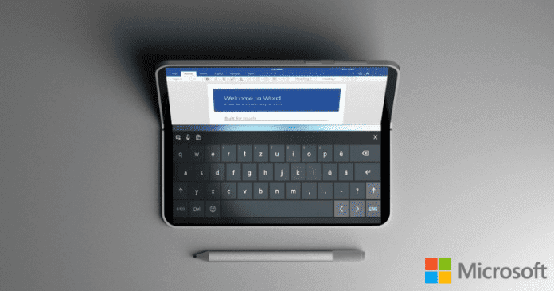

Microsoft’s All-New Dual Screen Foldable Device

We all know very well that the tech giant Microsoft failed miserably with Windows Phone. However, now according to the latest reports, recently, the tech giant Microsoft teased its another new dual-screen foldable device which will simply revolutionize the tablet and laptop market. Meet The Microsoft’s All-New Dual Screen Foldable Device.
Everyone knows very well that the tech giant Microsoft’s bet on hardware was a real success in the case of the Surface range devices, but, in the case of the Lumia smartphones was a real failure. As the success of the Surface range was simply due to its innovative factor, creating a niche that has become a new segment in the market. Since then users have been waiting for a new device of this quality from the tech giant Microsoft and now according to the new rumors soon the tech giant Microsoft will present its new range which will simply revolutionize the market once again as the tech giant Microsoft already did with its Surface devices. And to do so the tech giant Microsoft is developing a new device named as Centaurus which will run a new version of Windows 10 and the most interesting thing about this new device is that it will have a foldable display.
We all know very well that the tech giant Microsoft has been working on foldable devices for several years now. After having abandoned the market for smartphones with the extinction of the Lumia range, much has been said about the possible Surface Phone which is codenamed ‘Andromeda’. However, in addition to this revolutionary smartphone, the tech giant Microsoft will also develop a foldable device with more similar characteristics of a tablet. As recently, a reputed Twitter user claims to have discovered references to Andromeda Device, WindowsCoreHeadless OS, Windows Core Hub OS, Andromeda OS, Polaris, Lite, and Centaurus in the latest build of Windows 10 19H1 SDK. This device as we told earlier codenamed as Centaurus, follows the same trend of spatial references to the tech giant Microsoft’s internal denominations and can be presented as early as on 2019. The tech giant Microsoft has patented several solutions for folding devices and given its preference for creating market trends, a folding device with Windows 10 could be a reality soon. Zac Bowden, who is closely linked to internal sources of the tech giant Microsoft has recently published some reflections on Centaurus which clearly indicates that it will be a device with size superior to the supposed Andromeda and will come with Intel processor. These statements are in line with other indications published on the Internet, which focus on the similarity of Centaurus to the Andromeda project. Although they are no more than rumors and small clues found in the work of the tech giant Microsoft, the truth is that the tech giant Microsoft should be working on something related to folding devices.